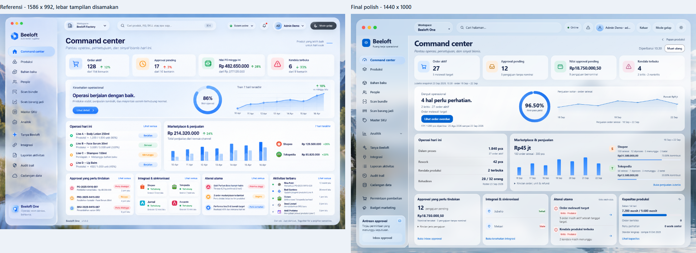

Disetujui melalui tinjauan visual manusia. Cuplikan memakai fixture QA sintetis, bukan data operasional pengguna. Komposisi dan pemetaan data dipertahankan.

Perubahan material yang tepat dan perbedaan visual tersisa.
Rekaman sekitar 18 detik, dari viewport 1440 x 1000 dengan potongan kiri 260px. Siklus CSS tetap 17 detik: aktif 65%, hening 35%, reset transparan. Hotspot terang lebih terkonsentrasi; intensitas dan timing gelap tetap.